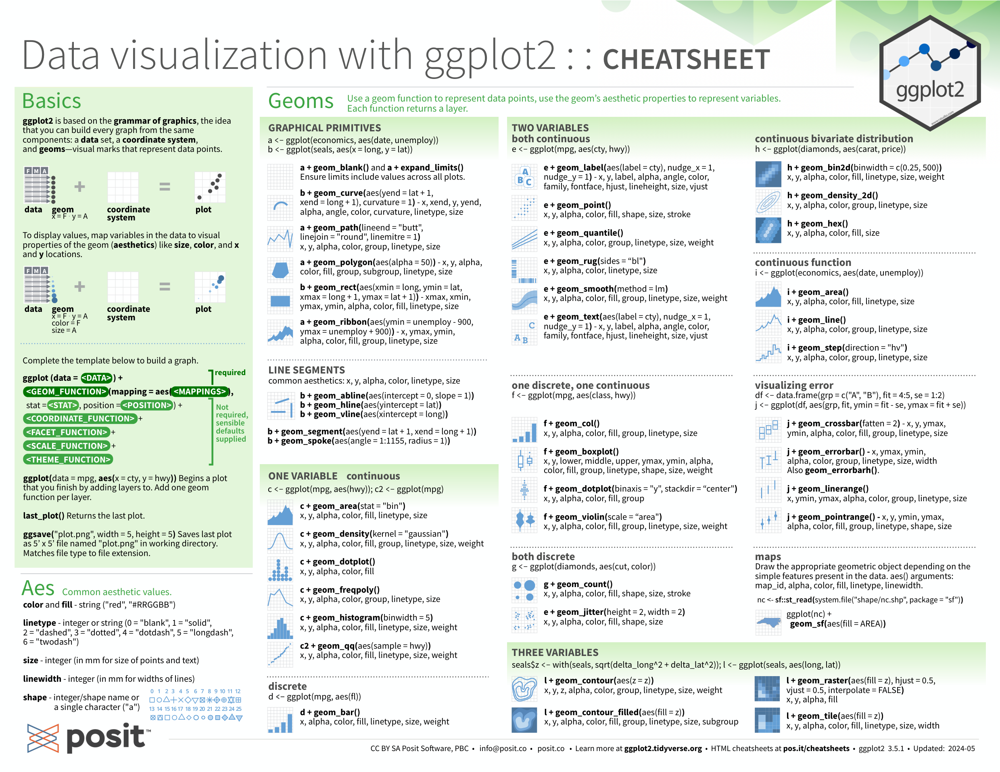
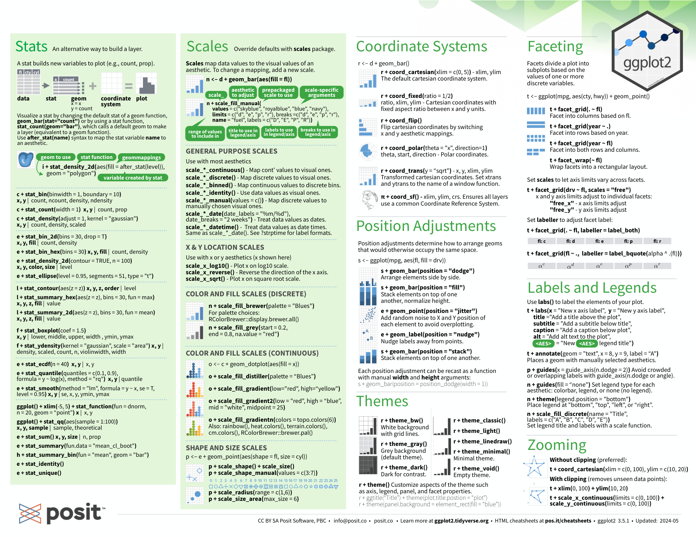

Visualization¶
“The greatest value of a picture is when it forces us to notice what we never expected to see.” -- John W. Tukey
Tools for data visualization:
| scene | Package |
|---|---|
| basics data visualization | ggplot2, lattice, grid |
| interactive plots | plotly, Shiny |
| more advanced challenges | D3.js |
7. Visualizing data distributions¶
- Variable types: categorical (ordinal or not) and numeric (discrete or continuous)
- discrete numeric data can be considered ordinal
- Distributions:
- empirical cumulative distribution function (eCDF)
- histograms
- smooth density plots: make it easier to compare two distributions
- normal distribution: use mean and standard deviation to describe the distribution.
- Boxplots: provides a five-number summary composed of the range (the minimum and maximum) along with the quartiles (the 25th, 50th, and 75th percentiles)
- stratification: Dividing observations into groups based on the values of one or more variables associated with those observations.
- the resulting groups is strata.
- quantile: are cutoff points that divide a dataset into intervals with set probabilities
quantile(data, q) pnorm(a, avg, s)gives the value of the cumulative distribution function for the normal distribution defined by averageavgand standard deviations.- Quantile-quantile plots, or QQ-plots, are used to check whether distributions are well-approximated by a normal distribution.
8. ggplot2¶
- benifit: easy for beginners; more intuitive for beginners (it uses a grammar of graphics)
- limitation: work exclusively with data tables in tidy format.
- ggplot2 consists of some components
- Data
- Geometry
- Aesthetic mapping
DATA |> ggplot() + LAYER 1 + LAYER 2 + … + LAYER N
- Packages: ggplot2, ggthemes, ggrepel
- some functions in ggplot2:
- barplots:
geom_bar - histograms:
geo_histogram - density plots:
geo_density - boxplots:
geo_boxplot - images:
geom_tileandgeom_raster
- barplots:
ggplot2 cheatsheet pdf  
9. Data visualization principles¶
- Encoding data using visual cues: position, aligned lengths, angles, area, brightness, color hue
- In general, when displaying quantities, position and length are preferred over angles and/or area. Brightness and color are even harder to quantify than angles.
- But they are sometimes useful when more than two dimensions must be displayed at once.
- Know when to include 0
- When using length as a visual cue, it is misinformative not to start the bars at 0.
- When using position rather than length, it is then not necessary to include 0
- Do not distort quantities
- Order categories by a meaningful value
- Show the data
| S | |
|---|---|
- Ease comparisons
- Use common axes
- Aligning plots for comparisons
- Transformations
- log transformation
- logistic transformation
- square root transformation
- Visual cues to be compared should be adjacent
- Think of the color blind
| S | |
|---|---|
- Plots for two variables
- Slope charts
- Bland-Altman plot
- Encoding a third variable
- We encode categorical variables with color and shape.
- For continuous variables, we can use color, intensity, or size.
- Avoid pseudo-three-dimensional plots
- Avoid too many significant digits:
options(digits = 3) - Know your audience
- for our own exploratory data analysis
- to convey a message to experts
- to help convey a message to a general audience
10 Data visualization in practice¶
Case Study 1¶
Case Study 2¶
- Logistic transformation: \(f(p)=\log(\frac{p}{1-p})\): This scale is useful when we want to highlight differences near 0 or 1